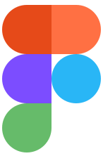
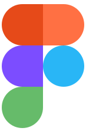

February 2023
View menus, schedules, events and make reservations to anybody.


February 2023
Social network with encrypted conversations and publications
February 2023
Get training guides from personal trainers and view progress


 
 
 English
English
 Spanish
Spanish